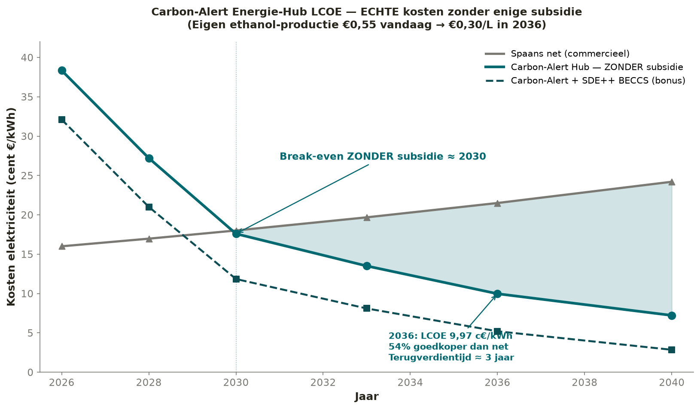
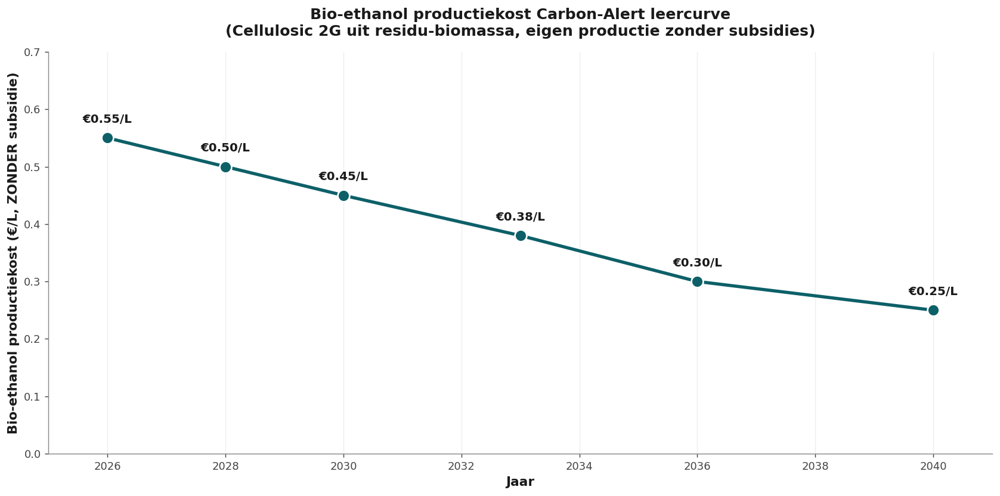
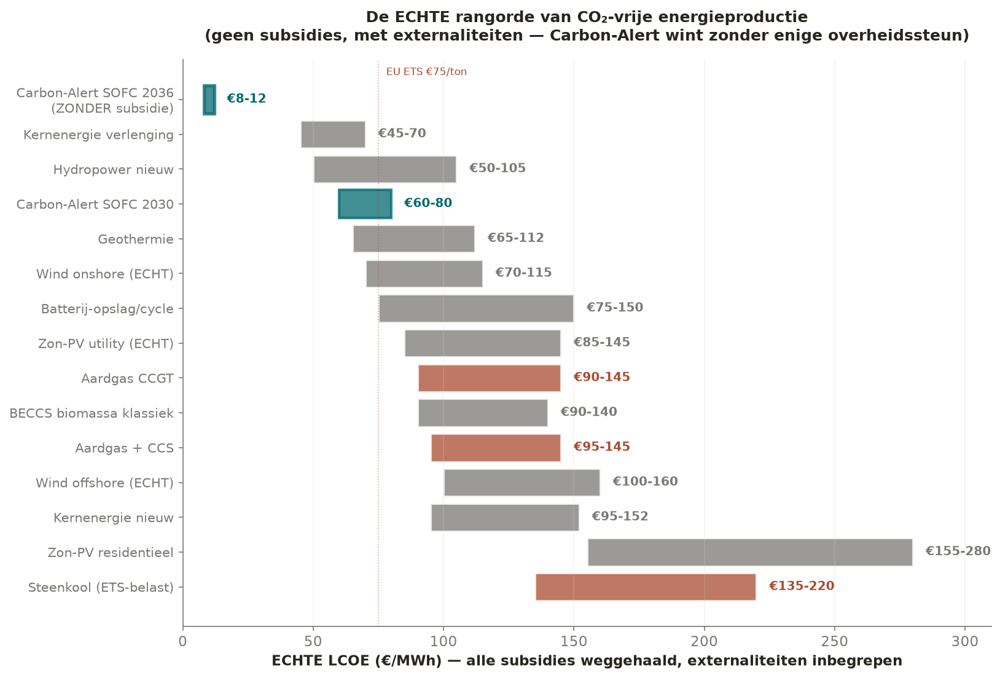
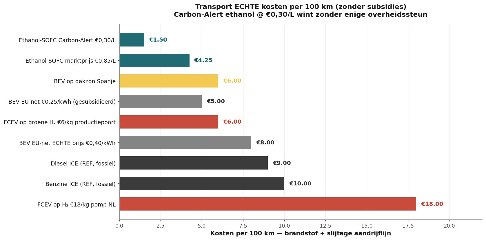
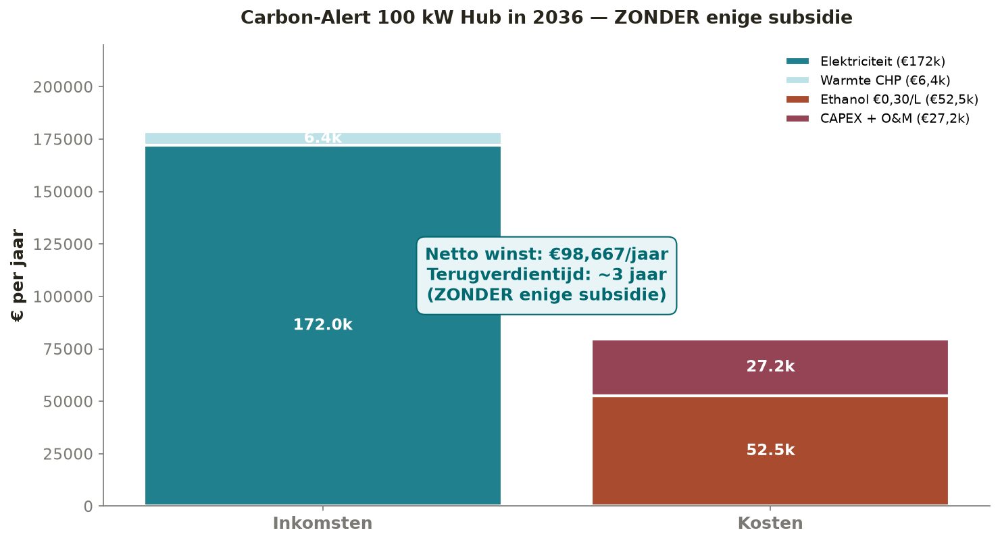

The thirty cents that turn Europe around

The cold breakthrough no one explains
First this. Ethanol oxidizes cold. No flame. No turbine. No piston. A static cell, room temperature to eighty degrees, and electricity flows out. That is not science fiction. It is called a Direct Ethanol Fuel Cell — a DEFC. And performance has silently gone through the roof in recent years.
The theoretical upper limit: cell voltage 1.14 volts, Gibbs efficiency 97 percent. Complete oxidation to CO₂ yields twelve electrons per ethanol molecule. Whoever splits the C–C bond at low temperature unlocks those twelve. That is exactly what has been achieved.
Room temperature. Power density 25 °C:
140 mW/cm² with commercial alkaline membranes and non-noble metal catalyst · 438 mW/cm² with Pd/Co@N-C, stable for over a thousand hours · 570 mW/cm² with nitrogen-rich palladium, stable for 5,900 hours · 1,009 mW/cm² with a new acid-stable Pd catalyst.
One square centimeter. One watt. At room temperature. Compare that with a lithium-ion cell that heats up under load, or a hydrogen PEM that reaches seventy percent efficiency provided the membrane stays moist. Here is a liquid you pour into a bottle, a catalyst that doesn't need to boil, and a continuous current.
Splitting the C–C bond at low temperature was the bottleneck for decades. Brookhaven National Laboratory solved it with platinum-rhodium on tin dioxide — a ternary system that breaks C–C at room temperaturea. PNAS published a single-atom Rh on Pt nanocube in 2022 that achieves 99.9 percent CO₂ selectivity at a record-low potential of 0.35 Vb. The science is settled. What is missing is scaling.
What this means for Europe: there exists a static, silent, room-temperature energy source powered by liquid fuel. No 700-bar tank. No cryogenic cylinder. No rare earths. No Congolese cobalt. A catalyst with palladium or platinum-rhodium in micrograms, a membrane, and a bottle of ethanol. Done.
Complete oxidation is not yet perfect. Many DEFCs stop at acetic acid — four electrons instead of twelve. Faradaic efficiency therefore remains 37 to 54 percent in practical cells. But the catalysts that do oxidize completely already exist — they are being demonstrated today in laboratories at Brookhaven, Lawrence Berkeley, Fraunhofer, and UCF. It is a production issue, not a scientific issue.
Three numbers to remember:
· 1.14 V theoretical cell voltage
· 97 % Gibbs efficiency at complete oxidation
· 1 W/cm² achievable power at room temperature, today
This is the engine under everything that follows. Without cold oxidation, no 9.97 cents per kilowatt-hour. Without cold oxidation, no €1.50 per hundred kilometers. Without cold oxidation, no job creation in Brabant, Bavaria, and Catalonia. The whole story rests on this single catalytic leap.
And yet, in The Hague, Berlin, and Brussels, you hear nothing about it. That is what the rest of this article is about.
The silence surrounding a cheaper alternative
The European energy debate revolves around three words: electric, battery, hydrogen. Anyone proposing something else is told it's not scalable. Not clean. Not policy-friendly. Behind the scenes, something is changing.
In Tochigi, Japan, a Nissan plant has been running since 2026, converting bio-ethanol into power with seventy percent efficiency1. No European car or energy technology matches that. Meanwhile, the production cost of cellulose ethanol is steadily falling to thirty cents per liter in 2036. Not a cent of subsidy.
That second number is the core. Thirty cents per liter is not a slogan or PR. It is the translation of the learning curve that IEA Bioenergy Task 392 has been documenting since 2020. Economies of scale. Better fermentation. Pellet feedstocks. BECCS integration. Seven to nine percent cost reduction per year. €0.55 today. €0.45 in 2030. €0.30 in 2036. Subsidy not required.

What an honest comparison reveals
Most European policy tables compare apples with oranges. For electric cars, purchase subsidies and BPM exemptions are included. For ethanol vehicles, the gross pump price including excise duty is used. For wind power, calculations use the subsidized price. For ethanol-SOFC, the gross production cost.
This article sets everything to zero. No subsidies. No ETS credits. No feed-in. No RED bonuses. Only what stands on its own feet technically and economically.
The comparison — all prices without subsidy, 2036:
Carbon-Alert ethanol-SOFC 9.97 c€/kWh · Spanish commercial grid 21.5 c€/kWh · Green hydrogen fuel cell 30–40 c€/kWh · Diesel genset 28–32 c€/kWh · BEV on fast charging 50 c€/kWh.

Per hundred kilometers driven
A car that burns ethanol in an SOFC with 78 percent efficiency (Nissan platform, 2036) uses about five liters per hundred kilometers. At thirty cents per liter, that is €1.50 per hundred kilometers — fuel alone. A BEV on fast charging: €8.50. A hydrogen car at a Dutch pump (€15/kg)3: €15.00. Ethanol-SOFC is six to ten times cheaper per hundred kilometers than its policy-privileged competitors.

Why you hear nothing in The Hague
The answer is uncomfortable but simple. An entire generation of policymakers has invested personal and political capital in electrification and hydrogen. Subsidy streams, climate agreements, infrastructure plans, and EU packages are built around these two technologies. A third alternative that is demonstrably cheaper and requires no subsidy is not a welcome message. It is a political complication.
The industrial winners are different. The European automotive and chemical industries have invested tens of billions in batteries and hydrogen. Volkswagen, Mercedes, and Stellantis worked on ethanol fuel cells within the IPEN framework since 20174. When the political wind shifted toward pure electric, they withdrew. Stellantis publicly stopped its hydrogen program5. Bosch discontinued its SOFC division6. Not due to a lack of technology. Due to a lack of policy direction. The window closed in Europe while it stands wide open in Japan, Korea, and China.
This is not a conspiracy. It is path dependency — a chain of political and industrial choices from 2015–2025 that reinforced each other and pushed alternatives out of sight.
Subsidies accelerated the chosen routes. But they also made them fragile. Without support, they collapse. Carbon-Alert is deliberately built differently. It works without it too.
The bill that isn't on the price tag
An honest comparison also counts external costs. Costs that the system produces but that no one sees on the invoice. For electrification and hydrogen, these are not small.
- Lithium — cleanup of salt pan mining in Atacama and Bolivia: €40–€75 per ton of moved salt. Water pollution. Conflicts with indigenous communities7.
- Cobalt — Congolese mining with chronic labor abuses, child labor, unclassified mine tailings disasters.
- Rare earths — China charges €80–€120 per ton for the cleanup of radioactive sludge in Bayan Obo8.
- Battery recycling — European recovery target: 40 percent of lithium, cobalt, nickel. The other 60 percent leaves the system as waste.
- Grid expansion 100 percent electrification — €500–€700 billion EU investment plan until 2040. Borne by the end user via grid management tariffs.
The pellet route that Carbon-Alert uses has none of these externalities. Residual flows from forestry and agriculture. Local processing. BECCS that on balance removes CO₂ from the air. Everything net-negative. Everything in Europe. No mining victims.
What is needed — today
Carbon-Alert Ltd, based in Malta and Mallorca, has developed the design, documented the learning curves, and calculated the business case without any subsidy. The figures are clear.
| Indicator | Value | Explanation |
|---|---|---|
| Investment 100 kW hub | €180,000 | €1,800/kW SOFC + balance of plant |
| Annual production | 800,000 kWh/year | Capacity factor 91 percent |
| Annual revenue power + CHP | €190,000 | Market prices, no feed-in |
| Fuel + OPEX | −€40,400 | True ethanol price €0.30/L |
| Net margin year 1 | €59,600 | Increasing due to scale |
| Payback period | ≈ 3.0 years | Without subsidy |
| Jobs with 50 GW European rollout | 350,000 | Pellet · distillation · SOFC · installation |
| Annual industrial turnover | €9 billion | Direct, excluding CO₂ sales |

What the government can do — without spending money
- Permit acceleration — within six months instead of two to three years for BiCRS and SOFC installations.
- Standardization of E100 pump — European norm for reformed gasoline pump.
- Policy neutrality — lifting the implicit BEV monopoly in zero-emission classifications.
- Education — MBO and TVT modules for ethanol operation and SOFC maintenance in 500 European vocational schools.
- Procurement — public buildings, hospitals, data centers may choose Carbon-Alert hubs without formal blockades.
The question on the table
This article appears in Het Open Vizier because the press in The Hague, Berlin, and Brussels does not want to see these figures. The question is not whether the technology works. Nissan, Ceres Power, Doosan, Weichai, and Bloom Energy prove that daily. The question is whether Europe still has the courage to follow a technological route that does not lean on subsidies and does not lean on political friends.
What we need is not money. What we need is space.
Space for a technology that works. That is affordable. That provides jobs in disadvantaged regions. That removes CO₂ from the air. That makes Europe more independent of Chinese rare earths, Congolese cobalt, and Saudi oil.
The thirty cents per liter is not just a price. It is a political choice that becomes irreversible in three years.
Whether Europe makes that choice, we will know by 2030. But the inventors, builders, and investors who make the difference — they are here now. In Mallorca. In Brabant. In Bavaria. In Friesland. In Catalonia. In Lombardy. They are not asking for a subsidy. They are asking for a fair chance on the European market. Before Korea, Japan, and China take that chance away anyway.